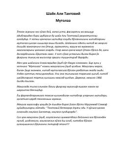

MKitob mutolaasining ahamiyati va uni to'g'ri tashkil etish haqida ilmiy-ma'rifiy risola.
Ushbu asar kitob mutolaasi, uning inson hayotidagi o'rni va ilm olish sirlariga bag'ishlangan. Muallif yoshlarga kitob tanlash, mutolaani to'g'ri yo'lga qo'yish va kundalik o'qish odatlarini shakillashtirish bo'yicha qimmatli maslahatlar beradi.